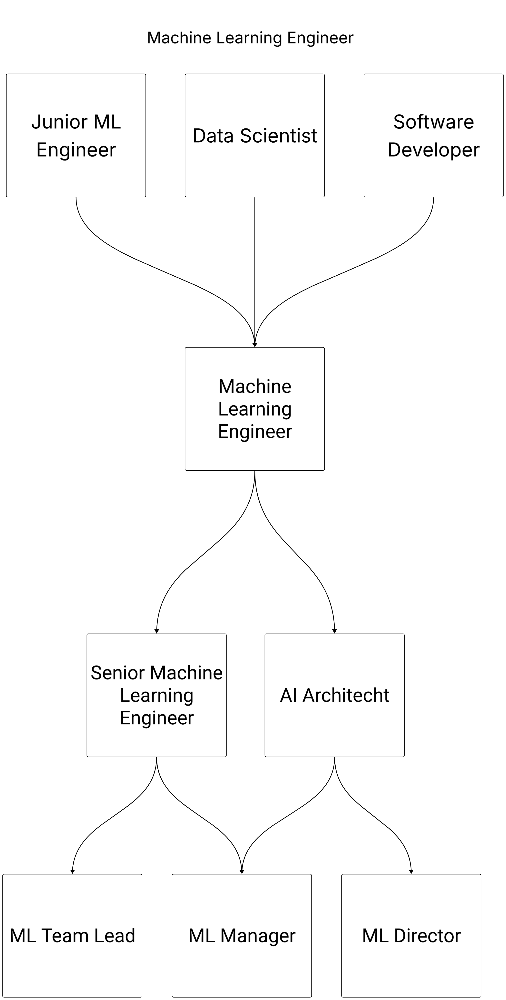
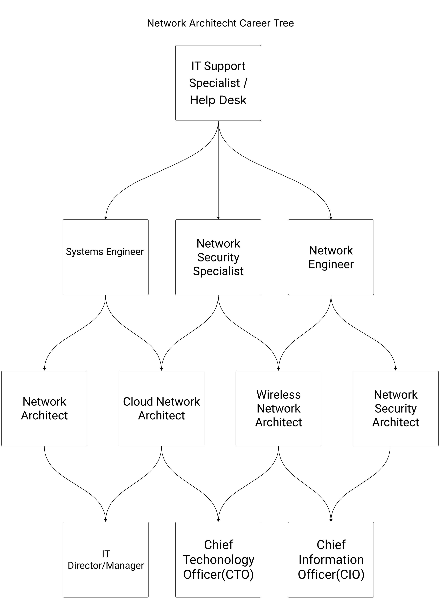

Explore various career paths in technology and find the one that suits you best!
This is the careers section.
They focus several hours of their day on coding, such as new API endpoints, Database Schemas, or implementing business logic. They also help colleagues debug the code using peer review. They also write SQL or deal with NoSQL databases to manage data flow, organization, and security
Machine learning engineers design and implement machine learning models.
Network architects help create the plan for data communication networks then they present those designs to the management, customers and staff. Then they deploy said networks and test to ensure there are no bugs in the system while also documenting the process. They also upgrade previous hardware to better models or to make them more efficient. While also researching better ways to do certain things in the work place.
This is the career information section.
They help create the plan for data communication networks then they present those designs to the management, customers and staff. Then they deploy said networks and test to ensure there are no bugs in the system while also documenting the process. They also upgrade previous hardware to better models or to make them more efficient. While also researching better ways to do certain things in the work place.
Educational Services hire network architects including public private or state. They are also hired in telecommunications, temporary help services, Computer systems design and related services and company and enterprise management, which includes offices of chief executives, corporate, subsidiary and regional managing offices, and other management consulting services.
| Certification Name | Issuing Organization |
| Oracle Financials Cloud: Payables 2024 Implementation Professional - Delta | Oracle |
| Network Automation | OpenText |
They use tools such as VS Code/ Notepad++ for writing code. They also use LucidChart for making diagrams and flowcharts
Entry Level Salary is between $68,000 - $90,000 annually. Mid-Level Salary is between $90,000 - $130,000 annually. Every year, there are about 11,200 job openings for network architects which is projected to grow by atleast 12% from 2024 to 2034.

They focus several hours of their day on coding, such as new API endpoints, Database Schemas, or implementing business logic. They also help colleagues debug the code using peer review. They also write SQL or deal with NoSQL databases to manage data flow, organization, and security
They are in high demand in the Tech , Finance, E-Commerce, Military, and Healthcare industries.
Those languages you should know are HTML, JavaScript(Node.JS), Python, SQL, Java, C#. Soft skills they need is being able to work in a team with other people for bigger projects and managing pre-existing ones. They also need problem solving skills to fix any issues that come up in or after development.
Some companies require backend developers to have a bachelors degree in a specific field but this is not required as some look more for technical skill rather than a degree. A useful bootcamp could be MITxPRO Full Stack Development with MERN bootcamp even though you won’t be using all of the things you learn in this bootcamp as a backend developer alot of it can be applied to that specific field.
| Certification Name | Issuing Organization |
| Python Developer Certification (PYDEV) | Logicwalker, LLC |
| Certified Developer of Training (CDT) | International Society of Performance Improvement |
They use tools such as GitHub for version control, Postman for testing APIs, and Docker for containerization. They also use frameworks like React for frontend development and Express.js for backend development.
Entry Level Salary is between $70,000 - $90,000 annually. Mid-Level Salary is between $90,000 - $120,000 annually. Every year, there are about 25,000 job openings for full stack developers which is projected to grow by atleast 15% from 2024 to 2034.
They help create the plan for data communication networks then they present those designs to the management, customers and staff. Then they deploy said networks and test to ensure there are no bugs in the system while also documenting the process. They also upgrade previous hardware to better models or to make them more efficient. While also researching better ways to do certain things in the work place.
Educational Services hire network architects including public private or state. They are also hired in telecommunications, temporary help services, Computer systems design and related services and company and enterprise management, which includes offices of chief executives, corporate, subsidiary and regional managing offices, and other management consulting services.
Network architects need to be familiar with Python, Powershell, JSON, Perl and C/C+. To be a network architect you also need analytical skills as you have to think about how to setup a network that best fits the needs and requirements of the company. You also need interpersonal skills because in network architecture you will have to work alongside other people so if you don’t work well for you this is no go. You’ll also need leadership skills as a lot of network architects direct a team of people to design, build and implement networks.
The degree needed to be a network architect can vary some companies require a bachelors degree. While some require a masters degree. And others show no preference degree or not. The best way to get hired as a network architect without any college degree is to have at least 5 years of experience in IT. While also having a decent amount of industry certifications such as the CCNA, CCNP, and CISSP.
| Certification Name | Issuing Organization |
| Oracle Financials Cloud: Payables 2024 Implementation Professional - Delta | Oracle |
| Network Automation | OpenText |
They use tools such as VS Code/ Notepad++ for writing code. They also use LucidChart for making diagrams and flowcharts
Entry Level Salary is between $68,000 - $90,000 annually. Mid-Level Salary is between $90,000 - $130,000 annually. Every year, there are about 11,200 job openings for network architects which is projected to grow by atleast 12% from 2024 to 2034.
